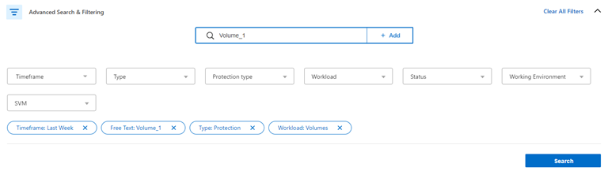

Versionshinweise
Versionshinweise
Überwachen des Status von Backup- und Wiederherstellungsjobs
 Änderungen vorschlagen
Änderungen vorschlagen
Sie können den Status von lokalen Snapshots, Replikationen und von Ihnen initiierten Backup-to-Object-Speicherjobs überwachen und von Ihnen initiierte Jobs wiederherstellen. Sie können die Jobs sehen, die abgeschlossen wurden, in Bearbeitung sind oder fehlgeschlagen sind, sodass Sie Probleme diagnostizieren und beheben können. Mit dem BlueXP Notification Center können Sie das Versenden von Benachrichtigungen per E-Mail aktivieren, damit Sie auch dann über wichtige Systemaktivitäten informiert werden können, wenn Sie nicht beim System angemeldet sind. Mithilfe der BlueXP Zeitleiste werden Details zu allen über die UI oder die API initiierten Aktionen angezeigt.
Anzeigen des Jobstatus auf dem Job-Monitor
Sie können eine Liste aller Snapshot-, Replikations-, Backup-to-Object-Speicher- und Wiederherstellungsvorgänge sowie deren aktuellen Status auf der Registerkarte Job-Überwachung anzeigen. Dazu gehören Vorgänge von Ihren Cloud Volumes ONTAP, On-Premises-ONTAP, Applikationen, Virtual Machines und Kubernetes-Systemen. Jeder Vorgang oder Job hat eine eindeutige ID und einen Status.
Der Status kann lauten:
-
Erfolg
-
In Bearbeitung
-
Warteschlange
-
Warnung
-
Fehlgeschlagen
Snapshots, Replikationen, Backups in Objektspeicher und Wiederherstellungsvorgänge, die Sie über die BlueXP Backup- und Recovery-Benutzeroberfläche und -API initiiert haben, stehen auf der Registerkarte Jobüberwachung zur Verfügung.

|
Wenn Sie ein Upgrade Ihrer ONTAP Systeme auf 9.13.x durchgeführt haben und keine laufenden geplanten Backup-Vorgänge in der Jobüberwachung angezeigt werden, müssen Sie den BlueXP Backup- und Recovery-Service neu starten. "Erfahren Sie, wie Sie BlueXP Backup und Recovery neu starten". |
-
Wählen Sie im Menü BlueXP die Option Schutz > Sicherung und Wiederherstellung.
-
Wählen Sie die Registerkarte Job-Überwachung aus.

In diesem Screenshot werden die standardmäßigen Spaltenüberschriften angezeigt.
-
So zeigen Sie zusätzliche Spalten an (Arbeitsumgebung, SVM, Benutzername, Workload, Richtlinienname, Snapshot-Bezeichnung), wählen Sie aus
 .
.
Suchen und filtern Sie die Jobliste
Sie können die Vorgänge auf der Seite Jobüberwachung mit verschiedenen Filtern filtern, z. B. Richtlinie, Snapshot-Bezeichnung, Art der Operation (Sicherung, Wiederherstellung, Aufbewahrung oder andere) und Schutztyp (lokaler Snapshot, Replikation oder Backup in der Cloud).
Standardmäßig werden auf der Seite Jobüberwachung Schutz- und Wiederherstellungsaufträge der letzten 24 Stunden angezeigt. Sie können den Zeitrahmen mithilfe des Zeitrahmens-Filters ändern.
-
Wählen Sie die Registerkarte Job-Überwachung aus.
-
Um die Ergebnisse unterschiedlich zu sortieren, wählen Sie die einzelnen Spaltenüberschriften aus, um sie nach Status, Startzeit, Ressourcenname usw. zu sortieren.
-
Wenn Sie nach bestimmten Jobs suchen, wählen Sie den Bereich Erweiterte Suche & Filterung aus, um das Suchfeld zu öffnen.
Verwenden Sie dieses Fenster, um eine freie Textsuche nach einer beliebigen Ressource einzugeben, z. B. „Volume 1“ oder „Application 3“. Sie können die Jobliste auch nach den Elementen in den Dropdown-Menüs filtern.

Dieser Screenshot zeigt, wie Sie in der letzten Woche nach allen „Volumen“- „Backup“-Jobs für Datenträger mit dem Namen „Volume_1“ suchen würden.
Die meisten Filter sind selbsterklärend. Mit dem Filter für „Workload“ können Sie Jobs in den folgenden Kategorien anzeigen:
-
Volumes (Cloud Volumes ONTAP und lokale ONTAP Volumes)
-
Applikationen Unterstützt
-
Virtual Machines
-
Kubernetes

-
Daten in einer bestimmten „SVM“ können nur dann nach Daten gesucht werden, wenn Sie zum ersten Mal eine Arbeitsumgebung ausgewählt haben.
-
Sie können mit dem Filter „Schutztyp“ nur dann suchen, wenn Sie den „Schutztyp“ ausgewählt haben.
-
-
Um die Seite sofort zu aktualisieren, wählen Sie die aus Schaltfläche. Andernfalls wird diese Seite alle 15 Minuten aktualisiert, sodass immer die aktuellsten Ergebnisse des Jobstatus angezeigt werden.
Zeigt die Jobdetails an
Sie können Details anzeigen, die einem bestimmten abgeschlossenen Job entsprechen. Sie können Details für einen bestimmten Job in einem JSON-Format exportieren.
Sie können Details wie Jobtyp (geplant oder On-Demand), Start- und Endzeiten für SnapMirror Backup (initial oder periodisch), Dauer, übertragene Datenmenge aus der Arbeitsumgebung in den Objekt-Storage, durchschnittliche Übertragungsrate, Richtlinienname, aktivierte Aufbewahrungssperre, durchgeführter Ransomware-Scan Details zur Schutzquelle und zu den Schutzzielen.
Restore von Jobs zeigen Details an, wie z. B. Backup-Zielanbieter (Amazon Web Services, Microsoft Azure, Google Cloud, On-Premises), S3-Bucket-Name, SVM-Name, Name des Quell-Volume, Ziel-Volume, Snapshot-Label, Anzahl wiederhergestellter Objekte, Dateinamen, Dateigrößen, Datum der letzten Änderung und vollständiger Dateipfad.
-
Wählen Sie die Registerkarte Job-Überwachung aus.
-
Wählen Sie den Namen des Jobs aus.
-
Wählen Sie das Menü Aktionen
 Und wählen Sie Details anzeigen.
Und wählen Sie Details anzeigen.
-
Erweitern Sie jeden Abschnitt, um Details anzuzeigen.
Laden Sie die Ergebnisse der Jobüberwachung als Bericht herunter
Sie können den Inhalt der Hauptseite zur Jobüberwachung als Bericht herunterladen, nachdem Sie ihn überarbeitet haben. BlueXP Backup und Recovery generiert bzw. lädt eine CSV-Datei herunter, die Sie nach Bedarf prüfen und an andere Gruppen senden können. Die .CSV-Datei umfasst bis zu 10,000 Datenzeilen.
Über die Details zur Jobüberwachung können Sie eine JSON-Datei herunterladen, die Details zu einem einzelnen Job enthält.
-
Wählen Sie die Registerkarte Job-Überwachung aus.
-
Um eine CSV-Datei für alle Jobs herunterzuladen, wählen Sie die aus
 Und suchen Sie die Datei in Ihrem Download-Verzeichnis.
Und suchen Sie die Datei in Ihrem Download-Verzeichnis. -
Um eine JSON-Datei für einen einzelnen Job herunterzuladen, wählen Sie das Menü Aktionen
Wählen Sie für den Job JSON-Datei herunterladen, und suchen Sie die Datei in Ihrem Download-Verzeichnis.
Überprüfung von Aufbewahrungsjobs (Backup-Lebenszyklus
Die Überwachung der Aufbewahrungsabläufe (oder Backup Lifecycle) unterstützt Sie bei der Vollständigkeit, Verantwortlichkeit und Sicherheit von Audits. Um den Backup-Lebenszyklus nachzuverfolgen, empfiehlt es sich, den Ablauf aller Backup-Kopien zu ermitteln.
Ein Backup Lifecycle-Job verfolgt alle gelöschten oder zu löschenden Snapshot Kopien in der Warteschlange. Ab ONTAP 9.13 können Sie sich auf der Seite Jobüberwachung alle Jobtypen mit dem Namen „Aufbewahrung“ ansehen.
Der Jobtyp „Aufbewahrung“ erfasst alle Snapshot Löschjobs, die auf einem Volume initiiert werden, das durch BlueXP Backup und Recovery geschützt ist.
-
Wählen Sie die Registerkarte Job-Überwachung aus.
-
Wählen Sie den Bereich Erweiterte Suche & Filterung aus, um das Suchfeld zu öffnen.
-
Wählen Sie als Jobtyp „Aufbewahrung“ aus.
Prüfen Sie Warnmeldungen bei Backup und Restore im BlueXP Notification Center
Das BlueXP Notification Center verfolgt den Fortschritt der von Ihnen initiierten Backup- und Restore-Jobs, sodass Sie überprüfen können, ob der Vorgang erfolgreich war oder nicht.
Zusätzlich zur Anzeige der Warnungen im Benachrichtigungscenter können Sie BlueXP so konfigurieren, dass bestimmte Arten von Benachrichtigungen per E-Mail als Warnungen gesendet werden, sodass Sie über wichtige Systemaktivitäten informiert werden können, selbst wenn Sie nicht beim System angemeldet sind. "Erfahren Sie mehr über das Notification Center und das Senden von Warn-E-Mails für Backup- und Wiederherstellungsaufträge".
Das Notification Center zeigt zahlreiche Snapshots, Replikationen, Backups in der Cloud und Wiederherstellungsereignisse an, aber nur bestimmte Ereignisse lösen E-Mail-Warnungen aus:
| Operationsart | Ereignis | Alarmstufe | E-Mail gesendet |
|---|---|---|---|
Aktivierung |
Die Aktivierung der Sicherung und Wiederherstellung ist für die Arbeitsumgebung fehlgeschlagen |
Fehler |
Ja. |
Aktivierung |
Backup- und Recovery-Bearbeitung für Arbeitsumgebung fehlgeschlagen |
Fehler |
Ja. |
Lokaler Snapshot |
Bei BlueXP Backup und Recovery besteht ein Ad-hoc-Fehler bei der Snapshot Erstellung |
Fehler |
Ja. |
Replizierung |
Ausfall von BlueXP Backup und Recovery bei einer Ad-hoc-Replizierung |
Fehler |
Ja. |
Replizierung |
BlueXP Backup- und Recovery-Replizierung hält Job-Fehler an |
Fehler |
Nein |
Replizierung |
BlueXP Backup- und Recovery-Replizierung bremst Job-Fehler |
Fehler |
Nein |
Replizierung |
Fehler bei der BlueXP Backup- und Recovery-Replizierung bei der Neusynchronisierung von Jobs |
Fehler |
Nein |
Replizierung |
Die BlueXP Backup- und Recovery-Replizierung stoppt Jobausfälle |
Fehler |
Nein |
Replizierung |
Bei der BlueXP Backup- und Recovery-Replizierung ist eine umgekehrte Neusynchronisierung von Jobs fehlgeschlagen |
Fehler |
Ja. |
Replizierung |
BlueXP Backup- und Recovery-Replizierung – Fehler beim Löschen von Jobs |
Fehler |
Ja. |
|
|
Ab ONTAP 9.13.0 werden alle Warnmeldungen für Cloud Volumes ONTAP und lokale ONTAP Systeme angezeigt. Bei Systemen mit Cloud Volumes ONTAP 9.13.0 und On-Premises-ONTAP wird nur die Warnmeldung im Zusammenhang mit „Wiederherstellungsjob abgeschlossen, aber mit Warnungen“ angezeigt. |
BlueXP Account-Administratoren erhalten standardmäßig E-Mails für alle Warnmeldungen „kritisch“ und „Empfehlungen“. Alle anderen Benutzer und Empfänger sind standardmäßig so eingerichtet, dass sie keine Benachrichtigungs-E-Mails erhalten. E-Mails können an alle BlueXP Benutzer, die Teil Ihres NetApp Cloud Kontos sind, oder an andere Empfänger gesendet werden, die Backup- und Wiederherstellungsaktivitäten kennen müssen.
Um die BlueXP Backup- und Recovery-E-Mail-Warnungen zu erhalten, müssen Sie auf der Seite „Alerts and Notifications Settings“ die Schweregrade „Critical“, „Warning“ und „Error“ für die Benachrichtigung auswählen.
-
Wählen Sie aus der BlueXP Menüleiste den (
 ).
). -
Überprüfen Sie die Benachrichtigungen.
Prüfen Sie die Vorgangsaktivitäten in der BlueXP Zeitleiste
Details zu Backup- und Wiederherstellungsvorgängen können Sie zur weiteren Untersuchung in der BlueXP Zeitleiste anzeigen. Die BlueXP Zeitleiste bietet Details zu jedem Ereignis, ob vom Benutzer oder vom System initiiert, und zeigt Aktionen an, die in der UI oder über die API initiiert wurden.